Más allá del Hola Mundo!
de Python.
Dr. Cristián Maureira-Fredes
R&D Manager @ 


@cmaureir
¿A qué te refieres con Python?
🤨Implementaciones
- IronPython - ironpython.net
- Jython - jython.org
- Stackless - stackless.com
- PyPy - pypy.org
- MicroPython - micropython.org
- RustPython - rustpython.github.io
- ...
- CPython - python.org 🎉
¿No sabes programar en C?
Te lo enseñamos en menos de 1 minuto
(por el mismo precio de la conferencia)
// hola.c
#include <stdio.h>
int main() {
int a = 10;
float total = 0;
char *b = "hola";
for (int i = 0; i < a; i++) {
total += i*0.5;
}
printf("El total es: %.2f\n", total);
printf("La palabra es: %s\n", b);
return 0;
}
$ gcc hola.c
$ ./a.out
El total es: 22.50
La palabra es: hola
Listos para hackear CPython

# hack.py
def f():
a = 2
b = 40
return a + b
print(f"Hola Mundo, esta es la respuesta: {f()}")
$ gdb --args python hack.py
¿Cómo Python entiende nuestro código?
El proceso completo
- Decoding - Bytes a texto (Decodificación)
- Tokenizing - Texto a palabras (Analisis léxico)
- Parsing - Palabras a Semántica (Analisis sintáctico)
- AST - Estructura Semántica (Árbol de sintaxis abstracta)
- Compiling - Bytecode a VM (Compilación)
1. Decoding
# -*- coding: latin-1 -*-
# This Python file uses the following encoding: utf-8
# coding: ascii
- PEP 263 - Definiendo las codificaciones del código fuente de Python
- PEP 3120 - Usando UTF-8 como la codificación de código por defecto
- PEP 3131 - Soportando identificadores No-ASCII
2. Tokenizing
x = 40 + 2
'x' '=' '40' '+' '2'
% python -m tokenize
x = 40 + 2
1,0-1,1: NAME 'x'
1,2-1,3: OP '='
1,4-1,6: NUMBER '40'
1,7-1,8: OP '+'
1,9-1,10: NUMBER '2'
1,10-1,11: NEWLINE '\n'
3. Parsing
- Grammar - docs.python.org/3.9/reference/grammar.html
LL(1)EBNF + PEG
if_stmt:
| 'if' named_expression ':' block elif_stmt
| 'if' named_expression ':' block [else_block]
elif_stmt:
| 'elif' named_expression ':' block elif_stmt
| 'elif' named_expression ':' block [else_block]
else_block: 'else' ':' block
while_stmt:
| 'while' named_expression ':' block [else_block]
...
4. Abstract Syntax Tree (AST)
- Zephyr ASDL - devguide.python.org/compiler/
Daniel C. Wang, Andrew W. Appel, Jeff L. Korn, and Chris S. Serra. The Zephyr Abstract Syntax Description Language. In Proceedings of the Conference on Domain-Specific Languages, pp. 213–227, 1997.
import ast
t = ast.parse("a = 40 + 2")
ast.dump(t)
# Module(body=[Assign(targets=[Name(id='a', ctx=Store())],
# value=BinOp(left=Constant(value=40, kind=None),
# op=Add(),
# right=Constant(value=2, kind=None)),
# type_comment=None)],
# type_ignores=[])
Abstract Syntax Tree (AST)
5. Compiling (Compilación)
- Depende de la VM de CPython
- Basado en Pilas (Stack)
def f():
a = 2
b = 40
return a + b
from dis import dis
dis(f)
2 0 LOAD_CONST 1 (2)
2 STORE_FAST 0 (a)
3 4 LOAD_CONST 2 (40)
6 STORE_FAST 1 (b)
4 8 LOAD_FAST 0 (a)
10 LOAD_FAST 1 (b)
12 BINARY_ADD
14 RETURN_VALUE
Esa era la parte fácil
vayamos a mirar el código¿Dónde están las mecánicas?
Python/ceval.c:955 _PyEval_EvalFrameDefault # master
El main_loop
PyObject
/* Nothing is actually declared to be a PyObject,
* but every pointer to a Python object can be cast
* to a PyObject*. This is inheritance buil by hand.
* Similarly every pointer to a variable-size Python
* object can, in addition, be cast to PyVarObject*.
*/
typedef struct _object {
_PyObject_HEAD_EXTRA
Py_ssize_t ob_refcnt;
struct _typeobject *ob_type;
} PyObject;
typedef struct _typeobject {
PyObject_VAR_HEAD
const char *tp_name; /* For printing, in format "." */
Py_ssize_t tp_basicsize, tp_itemsize; /* For allocation */
/* Methods to implement standard operations */
destructor tp_dealloc;
Py_ssize_t tp_vectorcall_offset;
getattrfunc tp_getattr;
setattrfunc tp_setattr;
PyAsyncMethods *tp_as_async; /* formerly known as tp_compare (Python 2)
or tp_reserved (Python 3) */
reprfunc tp_repr;
/* Method suites for standard classes */
PyNumberMethods *tp_as_number;
PySequenceMethods *tp_as_sequence;
PyMappingMethods *tp_as_mapping;
/* More standard operations (here for binary compatibility) */
hashfunc tp_hash;
ternaryfunc tp_call;
reprfunc tp_str;
getattrofunc tp_getattro;
setattrofunc tp_setattro;
/* Functions to access object as input/output buffer */
PyBufferProcs *tp_as_buffer;
/* Flags to define presence of optional/expanded features */
unsigned long tp_flags;
const char *tp_doc; /* Documentation string */
/* Assigned meaning in release 2.0 */
/* call function for all accessible objects */
traverseproc tp_traverse;
/* delete references to contained objects */
inquiry tp_clear;
/* Assigned meaning in release 2.1 */
/* rich comparisons */
richcmpfunc tp_richcompare;
/* weak reference enabler */
Py_ssize_t tp_weaklistoffset;
/* Iterators */
getiterfunc tp_iter;
iternextfunc tp_iternext;
/* Attribute descriptor and subclassing stuff */
struct PyMethodDef *tp_methods;
struct PyMemberDef *tp_members;
struct PyGetSetDef *tp_getset;
struct _typeobject *tp_base;
PyObject *tp_dict;
descrgetfunc tp_descr_get;
descrsetfunc tp_descr_set;
Py_ssize_t tp_dictoffset;
initproc tp_init;
allocfunc tp_alloc;
newfunc tp_new;
freefunc tp_free; /* Low-level free-memory routine */
inquiry tp_is_gc; /* For PyObject_IS_GC */
PyObject *tp_bases;
PyObject *tp_mro; /* method resolution order */
PyObject *tp_cache;
PyObject *tp_subclasses;
PyObject *tp_weaklist;
destructor tp_del;
/* Type attribute cache version tag. Added in version 2.6 */
unsigned int tp_version_tag;
destructor tp_finalize;
vectorcallfunc tp_vectorcall;
/* bpo-37250: kept for backwards compatibility in CPython 3.8 only */
Py_DEPRECATED(3.8) int (*tp_print)(PyObject *, FILE *, int);
#ifdef COUNT_ALLOCS
/* these must be last and never explicitly initialized */
Py_ssize_t tp_allocs;
Py_ssize_t tp_frees;
Py_ssize_t tp_maxalloc;
struct _typeobject *tp_prev;
struct _typeobject *tp_next;
#endif
} PyTypeObject;
/* The *real* layout of a type object when allocated on the heap */
typedef struct _heaptypeobject {
/* Note: there's a dependency on the order of these members
in slotptr() in typeobject.c . */
PyTypeObject ht_type;
PyAsyncMethods as_async;
PyNumberMethods as_number;
PyMappingMethods as_mapping;
PySequenceMethods as_sequence; /* as_sequence comes after as_mapping,
so that the mapping wins when both
the mapping and the sequence define
a given operator (e.g. __getitem__).
see add_operators() in typeobject.c . */
PyBufferProcs as_buffer;
PyObject *ht_name, *ht_slots, *ht_qualname;
struct _dictkeysobject *ht_cached_keys;
/* here are optional user slots, followed by the members. */
} PyHeapTypeObject;
No necesitas aprenderlas todas
...mejor miremos un poco de Python
Y ahora ¿qué?
Global Interpreter Lock (GIL)
Python 2
/* This is the GIL */
static PyThread_type_lock interpreter_lock = 0;
Python 3
/* Request for dropping the GIL */
_Py_atomic_int gil_drop_request;
struct _pending_calls pending;
struct _gil_runtime_state gil;
Hagamos un ejercicio
>>> import sys
>>> a = [1,2,3]
>>> b = a
>>> sys.getrefcount(a)
3
Investiga CPython
Doc/ Mac/ PC/ aclocal.m4 configure.ac README.rst
Grammar/ Misc/ PCbuild/ CODE_OF_CONDUCT.md install-sh* setup.py
Include/ Modules/ Programs/ config.guess* LICENSE
Lib/ Objects/ Python/ config.sub* Makefile.pre.in
m4/ Parser/ Tools/ configure* pyconfig.h.in
Directorios importantes
- Doc - Documentación
- Include - Cabeceras del intérprete
- Lib - Biblioteca estándar en Python
- Modules - Biblioteca estándar en C
- Objects - Tipos incorporados
- Python - Runtime de CPython
Un poco de inspiración...
- Brett Cannon
- Naomi Ceder
- David Beazley
- Larry Hastings
- James Powell
- ...y muchos más!
P&R
maureira.xyz
@cmaureir